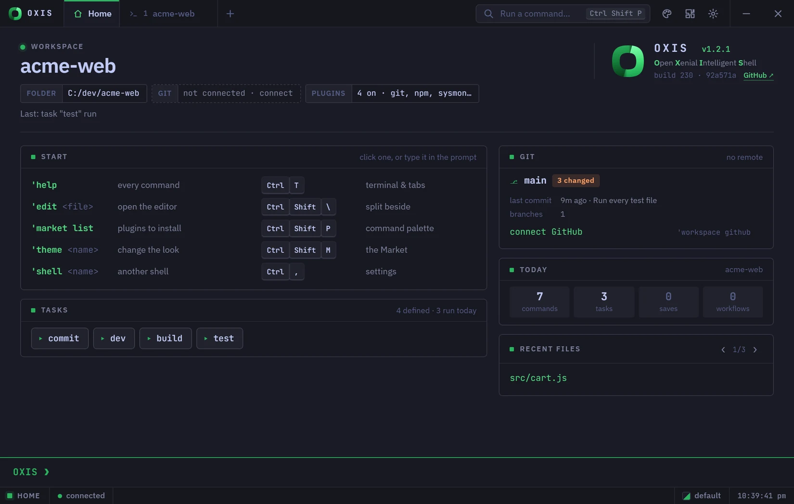
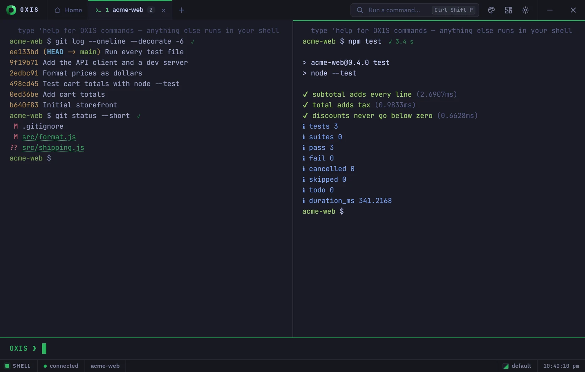
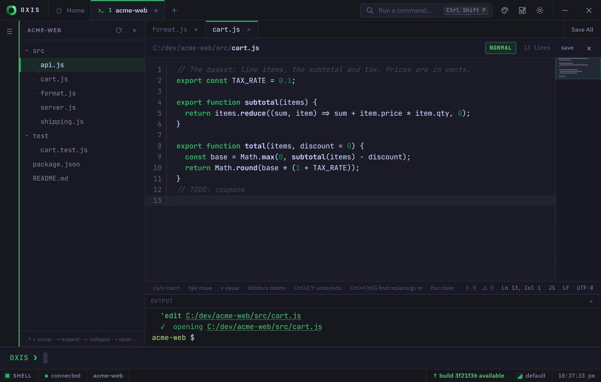
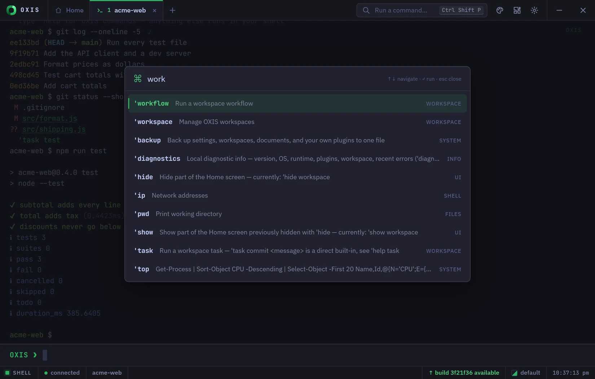
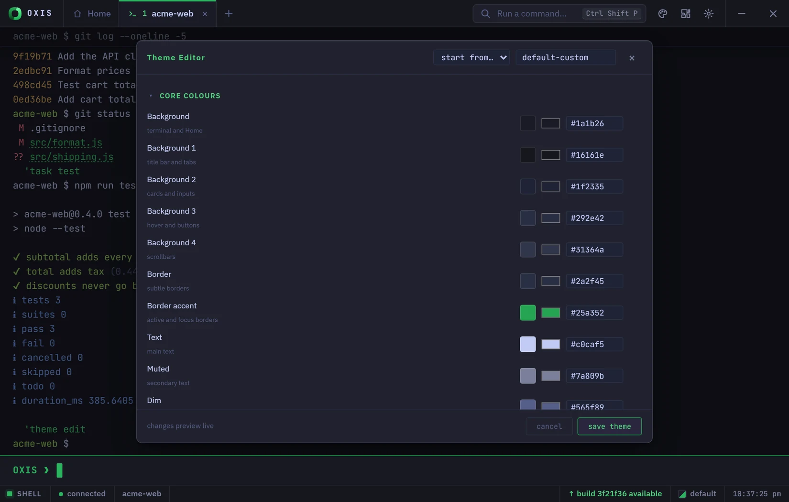
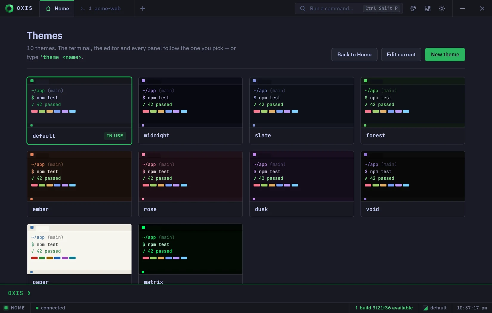

Your real shell,
programmable.
OXIS is a development workspace built around the shell you already use — PowerShell, bash, zsh or fish. It adds tabs and split panes, a built-in editor, per-project workspaces with tasks and workflows, and Lua for everything else.
Free and open source · Apache 2.0 · all downloads
'help. It simulates OXIS; nothing runs on your machine.Not a terminal emulator.
A workspace around your shell.
OXIS starts your actual shell in a real pseudo-console and leaves it alone. Around it, it puts the things you would otherwise juggle across several apps — and makes each of them scriptable.
Your shell, unchanged
Your profile, aliases and prompt load as usual. Anything that doesn't start with ' goes straight to the shell — REPLs, prompts and full-screen programs like vim and htop included. Pick a different shell per tab.
One per project
A workspace links to the project's folder and its own Git remote, and carries its tasks, workflows and plugins. Home shows its state at a glance: branch, changes, tasks and what to do next.
Programmable throughout
Commands, workflows, keymaps, events and Home panels are plain Lua 5.4 — in a plugin, a project's workspace.lua or your config.lua. Save, and it reloads. Plugins declare their permissions.
The project at a glance.
Home is the workspace's start page: its folder, Git remote and plugins; the tasks you run most, one click each; and the project's Git state, today's activity and recent files beside them.
- Next up suggests what needs you — uncommitted changes, unpushed commits, a command that just failed
- Start lists the commands and shortcuts that matter on day one
- Plugins can add their own header and shortcuts with
oxis.dashboard

Tabs, splits and one prompt.
Every tab and split pane is its own shell, opened in the folder you're working in. One prompt at the bottom sends to the focused pane, with history, reverse search and completion in any shell.
- Tab completes files, Git branches,
npm runscripts, SSH hosts and make targets; history suggests the rest - Ctrl+Shift+Space labels every URL, path and hash on screen — type the letter to copy
- Fold, re-run or copy any command's output;
'broadcasttypes into every pane at once - Hyperlinks, clipboard and progress from the tools that send them (OSC 8, 52, 9;4)

An editor beside your shell.
'edit opens any file next to the prompt, with a file tree, tabs and a minimap. Mistakes are underlined as you type, names are suggested, and HTML and Markdown get a live preview.
- Ctrl+P to any file, search in files, find & replace, go to symbol
- Vim's Normal, Insert and Visual modes — or turn them off
- Click
src/app.ts:12:5in a compiler error to open it right there

Everything is a command.
Start a line with an apostrophe and OXIS takes it: more than 60 built-in commands for files, themes, tasks, workflows, plugins and workspaces. Ctrl+Shift+P finds any of them as you type.
- The palette also searches plugin commands, tasks and your history
- Ctrl+, opens Settings: every setting, grouped and searchable
'update installswaps in the newest build and rolls back if it doesn't start

Everything ships in one binary.
About 14 MB, no runtime to install. A native window on Windows and Linux (Go and WebView), and the same interface in a browser tab while it runs.
Per-tab shells
PowerShell, Git Bash, WSL or cmd on Windows; your $SHELL on Linux. 'shell gitbash opens a tab with another.
Session restore
Tabs, splits, folders, recent output and unsaved editor text come back after a restart.
Workspaces
Per-project folder, Git remote, tasks, workflows and plugins; detects Node, Go, Rust and Python projects and suggests tasks.
Workflows
Steps with retries, conditions, environment and parallel runs, failing on real exit codes.
Lua plugins
Real Lua 5.4 with LuaRocks and C modules, each plugin in its own VM with declared permissions.
Plugin Market
'market install from the terminal; 'plugin publish files yours for review.
Built-in editor
Live problems, suggestions, search, minimap, Vim modes and a Markdown and HTML preview.
Quick select & images
Copy anything on screen with two keys; 'imgcat shows pictures in the output.
Recording & triggers
'record saves a tab as an asciinema cast; 'trigger highlights the lines that matter, with a sound or notification.
Summon key
Win+` brings OXIS to the front from anywhere; Open in OXIS on folders in Explorer.
Self-updating
'update install installs the newest build; 'version shows the exact commit and build.
Private by default
No account and no telemetry. Network use is visible: update checks, the Market, and what plugins declare.
Your workspace
is a program.
Write a plugin in OXIS's own editor, save it, and it's live. The same API drives the plugins in the Market.
--[[@manifestversion: 1.0.0description: open a pull request for a branchpermissions: shell]]oxis.command("pr", function(args, rest) local branch = rest ~= "" and rest or "HEAD" oxis.echo("opening a PR for " .. branch) oxis.run("gh pr create --web --head " .. oxis.quote(branch))end, "open a GitHub PR")oxis.autocmd("ShellOpen", function() oxis.echo("pr ready — try 'pr my-branch")end)
oxis.workflow("release", { env = { NODE_ENV = "production" }, steps = { { task = "install" }, { run = "npm run build", retry = 2 }, { run = "npm test", continueOnError = true }, { command = "version" }, -- an 'command { condition = "env:DEPLOY", run = "npm run deploy" }, -- only when DEPLOY is set { parallel = { { command = "plugin list" }, { command = "workspace info" } } }, },}, "build, test and deploy")-- 'workflow release
oxis.command("ship", function() oxis.ask("Deploy to production? (yes/no)", function(answer) if answer ~= "yes" then return oxis.echo("not shipped", "dim") end local spin, i = { "⠋", "⠙", "⠹", "⠸", "⠼", "⠴" }, 0 local line = oxis.line("⠋ deploying…", "accent") local tick = oxis.every(0.08, function() i = i + 1; line:set(spin[i % #spin + 1] .. " deploying…") end) oxis.process.spawn({ cmd = "npm", args = { "run", "deploy" } }, { exit = function(code) tick:stop() line:set(code == 0 and "✓ deployed" or "✗ deploy failed", code == 0 and "ok" or "err") end, }) end, { label = "ship" })end, "deploy, after asking")
{ "name": "harbour", "extends": "slate", "purple": "#5cc8ff", "purple2": "#2f8fd8", "success": "#7ee787", "statusBg": "#1f6fb2", "font": "'Fira Code', monospace", "fontSize": 14, "ligatures": true, "promptText": "⚓ ❯", "glow": 0.25, "cursorStyle": "bar", "radius": 6, "backgroundGradient": "linear-gradient(160deg, #0e1018 40%, #12304a)"}// 'theme import harbour.json · or tweak live:// 'theme set glow 0.45
Ten themes. 73 settings.
All of them yours to change.
Pick one — this page and the demo above follow it. In OXIS, 'theme set <key> <value> changes anything live and keeps your own copy.
A live theme editor
'theme edit opens every setting with a live preview: colours, fonts, spacing, glow, background images and gradients.

Themes are just JSON
Drop files in ~/.oxis/themes/, extend a built-in with "extends", or 'theme import one. Unknown keys are reported, never fatal.
bgpurplestatusBgpromptTextglowfontligaturesradiuscursorStylesynKeywordbackgroundGradientcss
Straight from the app.
Every picture here is a screenshot or recording of OXIS itself.
Extend your workspace.
Every free plugin is a plain, readable Lua script — read it, fork it, or install it with 'market install <name>. Publish yours with 'plugin publish, which files it for review. Premium plugins will be monthly subscriptions via Stripe; none can be bought yet.
Up and running in a minute.
Every push to main is built by GitHub Actions and published to the rolling latest-build release.
Windows 10 & 11 (x64)
Use the installer, or the portable oxis.exe. WebView2 already ships with Windows.
- Run the installer (or the .exe — it keeps its data next to itself).
- Type
'help, or just start typing commands you already know. 'update installkeeps you on the newest build from then on.
PS> Invoke-WebRequest https://github.com/oxlaboratory/ oxis/ releases/ download/ latest-build/ oxis.exe -OutFile oxis.exe PS> .\oxis.exe
Linux (x64)
A .deb for Debian and Ubuntu, a portable tarball, or the bare binary. OXIS needs GTK 3 and WebKitGTK — the .deb pulls them in.
- Install the package (or run the binary after installing
libgtk-3-0andlibwebkit2gtk-4.1-0). - OXIS opens your
$SHELL— bash, zsh or fish.
$ curl -LO https://github.com/oxlaboratory/ $ sudo apt install ./oxis_1.2.1_amd64.deb $ oxisoxis/ releases/ download/ latest-build/ oxis_1.2.1_amd64.deb
macOS (Apple silicon) — preview
OXIS.app, zipped. It's built and tested on macOS with every change, but hasn't been tried on a Mac by a person yet — tell us how it goes.
- Unzip and move
OXIS.appto Applications. - It isn't signed yet: the first time, right-click it → Open.
- OXIS opens your
$SHELL— zsh by default.
% unzip oxis-*-macos-arm64.zip -d /Applications % xattr -dr com.apple.quarantine /Applications/OXIS.app % open /Applications/OXIS.app
Build it yourself
Go 1.22+ and Node.js 24+; on Linux also libgtk-3-dev libwebkit2gtk-4.1-dev pkg-config. On macOS, Xcode's command line tools.
npm run setupchecks your tools and installs dependencies.npm run buildstamps the version, commit and build number into the binary.npm run devrebuilds and relaunches on every change.
$ git clone https://github.com/oxlaboratory/oxis.git $ cd oxis $ npm run setup $ npm run build # → dist/oxis.exe or dist/oxis
Good questions.
What is OXIS, exactly?
Do I have to change shells or relearn anything?
$SHELL on Linux, including zsh and fish; 'shell <name> opens a tab with another, and OXIS_SHELL changes the default. Your profile, aliases and prompt load as usual, and anything not starting with ' goes straight to the shell.Does OXIS collect any data?
'config set updateCheckOnStartup false turns that off), to browse the Market, and for requests your plugins make — which need the net permission. 'update install counts itself in the public download total once a day ('config set countInstalls false turns that off).Is it free?
How do updates work — and how do I know what I'm running?
'update compares your build with main on GitHub; a new tab tells you when you're behind. 'update install fetches the latest build, swaps it in and restores the old one if the new one fails to start. 'version shows the version, build number, commit, release tag, channel and build date.Can I bring my setup with me?
~/.oxis/config.lua runs at startup, themes are JSON files in ~/.oxis/themes/, each project can carry a .oxis/workspace.lua, and 'backup / 'restore move everything between machines.What about macOS?
OXIS.app in the latest build. Every change is built on macOS by CI, but it hasn't been used on a Mac by a person yet, so issues and pull requests are very welcome. It isn't signed: right-click → Open the first time.Keep your shell.
Program the rest.
Install OXIS, open your project, and type 'help.